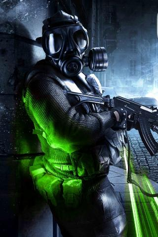
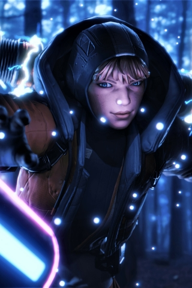
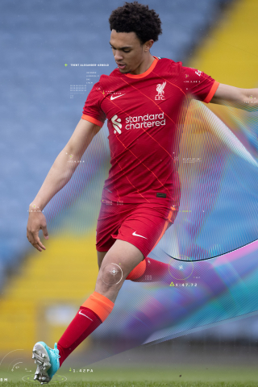

Proximamente

Call of Duty. Warframe: No podia faltar agregar una joya en shooter, Call of duty. Habran 2
categorias: Battle royale y el formato basico (duelo por equipos, captura la bandera, buscar y
destruir Y Dominacion)

Apex Legends: Batalla campal de 20 equipos de 3 integrantes cada uno! El equipo que sobrevive gana!
y el equipo con mas bajas gana puntos tambien! (una vez se cree el torneo se explicara las
puntuaciones)
